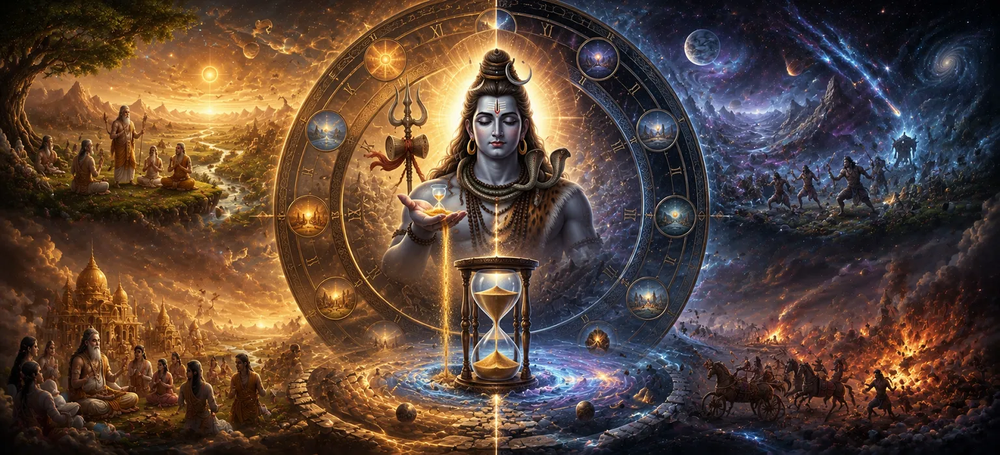

After establishing the divine order of the universe, Lord Shiva completed another profound aspect of creation by bringing forth Time itself. Until this sacred moment, the worlds, the gods, the elements, and all living beings existed according to divine design, yet the eternal flow that would govern change, growth, destiny, and spiritual evolution had not begun. Without Time, creation could neither progress nor fulfill its divine purpose. To sustain the universe through countless ages, the Supreme Lord manifested Kala—the eternal principle of Time. Through Kala, every moment of existence received its place within the cosmic order. Birth and growth, joy and sorrow, action and consequence, creation and dissolution all became part of an unending rhythm established by Mahadeva.
Time was not created to destroy the universe but to guide every soul toward spiritual realization through experience, duty, and devotion. Under the divine command of Lord Shiva, Time began to flow through four great ages—Satya Yuga, Treta Yuga, Dvapara Yuga, and Kali Yuga. Each Yuga possesses its own spiritual qualities, challenges, and divine purpose, while together they form the eternal cycle through which Dharma rises and declines according to the Supreme Lord's cosmic plan. This sacred chapter unveils the divine origin of Time and explains the profound mystery of the Yugas. By understanding these eternal cycles, devotees gain deeper insight into the nature of existence, the passage of history, and the timeless wisdom through which Mahadeva governs the entire universe.
The Shiva Purana explains that Time (Kala) is not merely the passing of moments, days, or years. Kala is a divine power manifested through the will of Lord Shiva. It governs the movement of creation, the unfolding of destiny, and the completion of every action performed within the universe. Nothing exists beyond Time except the Supreme Lord Himself. Mountains rise and fall, kingdoms flourish and disappear, stars are born and eventually fade away, but Kala continues its eternal journey without interruption. Thus, Time becomes one of the greatest expressions of Shiva's infinite authority over creation.
The Supreme Lord did not allow Time to flow without purpose. Instead, He divided the great journey of creation into four sacred ages known as the Yugas. Each Yuga possesses its own spiritual atmosphere, level of righteousness, and challenges for humanity. Through this divine arrangement, souls are given countless opportunities to grow spiritually. Even though Dharma gradually declines from one Yuga to the next, the path toward liberation always remains open for those who sincerely seek the Supreme Lord.
The Age of Truth, where Dharma stands complete and righteousness fills the world.
The age in which Dharma begins to decline, yet virtue still shines brightly.
The age of increasing conflict, where both virtue and ignorance coexist.
The present age, where devotion becomes the easiest path to the Supreme Lord.
The Four Yugas do not exist independently. Together they form one complete cycle known as a Maha Yuga. When one cycle ends, another begins, continuing endlessly according to the divine will of Lord Shiva. Through these repeating cycles, the universe constantly renews itself while providing every soul with repeated opportunities for spiritual evolution. This eternal wheel reminds devotees that although civilizations change and ages pass away, the Supreme Truth never changes. Lord Shiva remains beyond Time, while Time itself serves as His sacred instrument.
The Shiva Purana teaches that Dharma does not disappear suddenly but gradually declines as the Yugas progress. During Satya Yuga, righteousness shines in its complete perfection. In Treta Yuga, virtue remains powerful but begins to diminish. During Dvapara Yuga, Dharma and Adharma exist side by side, while Kali Yuga becomes the age in which ignorance, attachment, and selfishness are most visible. Yet the Supreme Lord never abandons creation. Even in Kali Yuga, when righteousness appears weakest, sincere devotion possesses extraordinary power. Thus, every age offers its own path toward spiritual liberation according to the divine wisdom of Lord Shiva.
Time is often feared because it brings change, aging, and the end of worldly things. However, the Shiva Purana reveals a deeper truth: Time is a compassionate teacher. Through the passing of time, souls gain experience, understand the consequences of their actions, and gradually move toward wisdom and liberation. Every challenge, every joy, every success, and every hardship becomes part of the soul's spiritual journey. Therefore, Kala is not an enemy but one of the greatest gifts bestowed by the Supreme Lord.
Although Time governs the entire universe, Lord Shiva Himself remains beyond Time. He is eternal, beginningless, endless, and untouched by birth, growth, decay, or death. Kala functions only because it arises from His infinite will. This profound truth reminds devotees that while everything in the material universe changes, the Supreme Reality never changes. Those who surrender themselves to Mahadeva gradually transcend the fear of Time and realize the eternal nature of the soul.
Every age passes, reminding us that worldly life is temporary.
Though righteousness declines, it is restored again in the eternal cycle.
Beyond every Yuga and beyond Time stands the Supreme Lord forever.
The cycle of the Four Yugas teaches humanity that change is one of the eternal laws established by Lord Shiva. Kingdoms rise and fall, civilizations flourish and disappear, and generations pass into history, yet the Supreme Truth remains unchanged. Every Yuga reminds mankind to seek that eternal truth rather than becoming attached to temporary worldly achievements. The sages understood that the purpose of learning about the Yugas was not merely to calculate time but to awaken spiritual awareness. Those who understand the eternal rhythm of creation become free from fear and place their faith in the timeless refuge of Mahadeva.
Perfect righteousness, truth, peace and complete harmony with the Divine.
Virtue remains strong, though Dharma begins its gradual decline.
Good and evil exist together as humanity faces increasing challenges.
The present age where devotion to Lord Shiva becomes the easiest path to liberation.
"Time changes every age, but it can never change the Eternal. Beyond every moment, every Yuga, and every universe stands Lord Shiva—the timeless Supreme Reality."
Having understood the divine origin of Time and the eternal cycle of the Four Yugas, the sages were filled with even greater curiosity. They realized that although Time governs creation, it is the divine beings appointed by Lord Shiva who carry forward the work of creation within every age. Eager to learn more about this sacred responsibility, they requested the next revelation concerning the duties entrusted to the Creator. Thus, the narration gently moves toward the next chapter, where the glorious responsibilities of Lord Brahma within the divine plan of creation are revealed.
The mystery of Time and the eternal cycle of the Four Yugas has now been revealed. Continue to the next chapter to discover how Lord Brahma, under the divine guidance of Lord Shiva, brought forth the gods, sages, and celestial beings who would shape the destiny of creation.